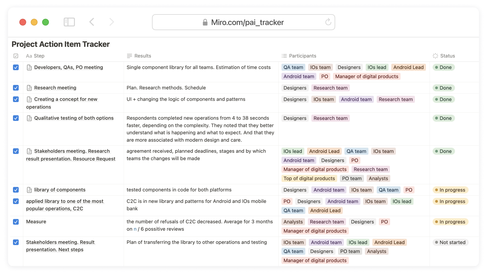
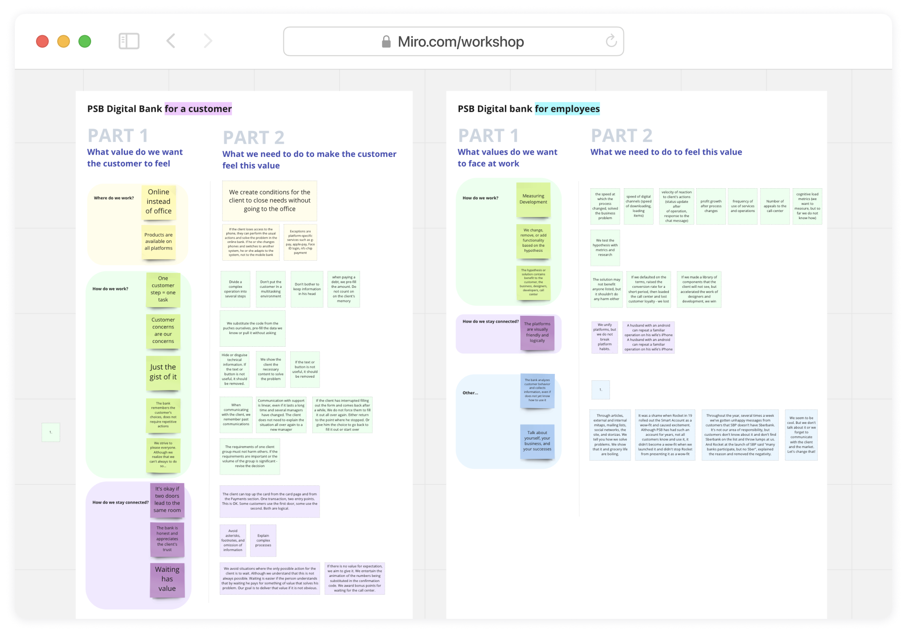
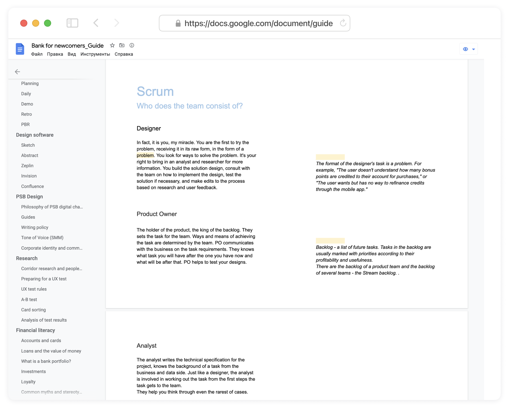
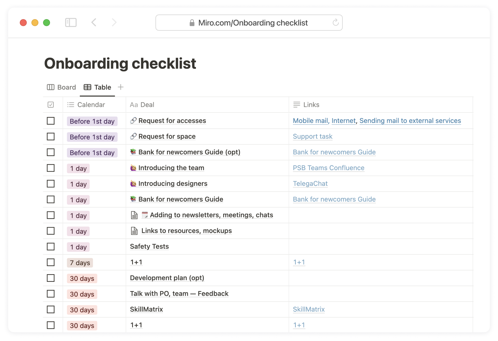
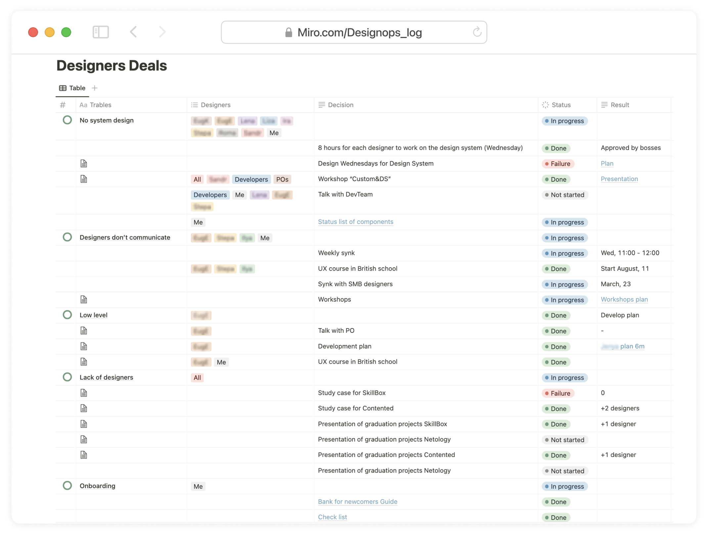

In order to realise my initiative to create a design system for the bank, I planned actions, participants and goals

Workshop on defining the fundamentals of digital banking

Newcomer's Guide

Newcomer onboarding checklist

DesignOps: Actions and Impact Log